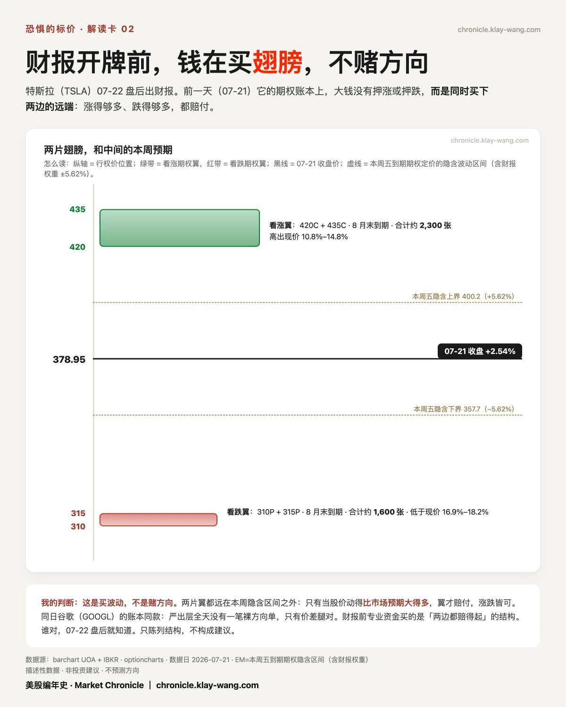
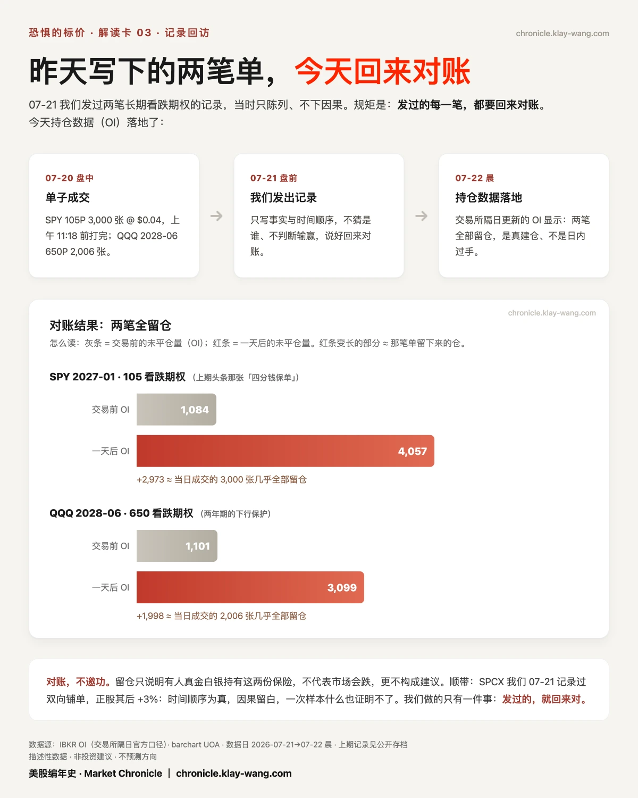
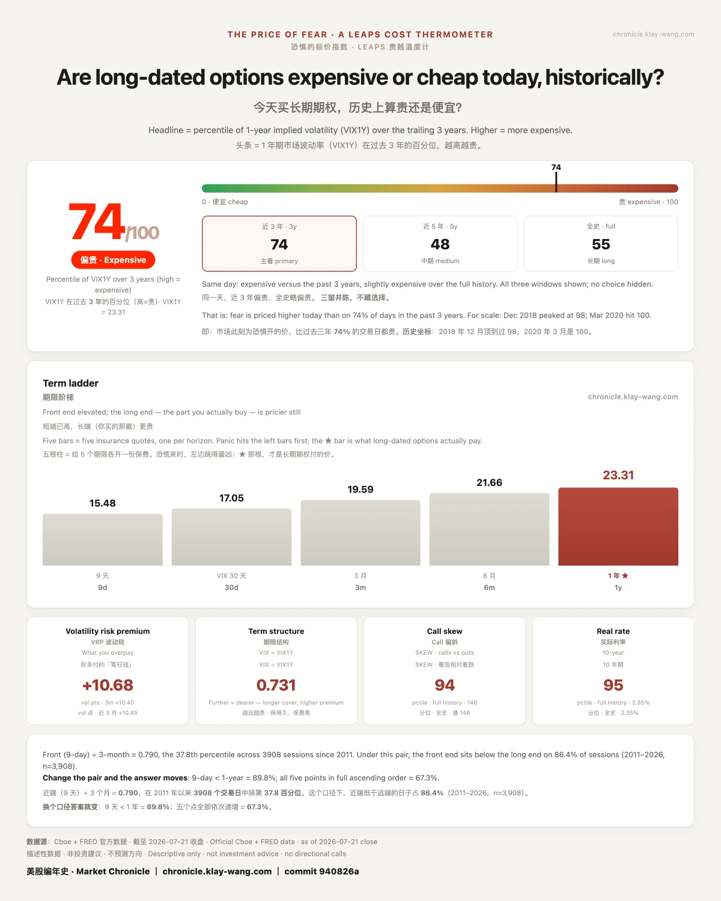

财报开牌前，聪明钱在买翅膀· 07-22 · 7.20-7.24
先说昨天最热闹的一张牌桌。
美光正股 +12.10%，收 970。它当天到期的 970 看涨期权，收盘 +665%。1 块钱进去，7.65 块出来，一个交易日。

而且不止一张：945 到 980 的当日 call，全线收在 +641% 到 +701% 之间。整条走廊都中奖了。
这些钱是谁的？当天成交 9447 张，而前一天的持仓只有 298 张。9000 多张是当天追进去的新钱。他们赌对了。
但同一张桌子的另一边，坐着输家。MU 是 13 只票里下方保护堆得最厚的：全组第一的看跌仓位、堆在 800 的 put 墙，昨天全场陪跑。牌桌两边都是真人，只是没人给陪跑的拍照。
今晚轮到下一张桌子：谷歌、特斯拉，盘后开牌。
散户的玩法是猜方向。大钱的玩法不一样。
特斯拉的账本上，有人同时买了两边的远端：8 月末的 420、435 看涨约 2300 张，310、315 看跌约 1600 张，全部在本周隐含波动区间（±5.62%）之外。

怎么理解呢？涨得够狠、跌得够狠，都赔付；小涨小跌，两边全丢。我的判断：这是买波动，不是赌方向。谷歌同款，全天没有一笔裸方向单，只有价差腿对。
散户在猜方向，专业资金在买幅度，这就是我们要学习和抄作业的地方：学思路。
还有个细节：市场为这两份财报付的钱，全押在本周。2027 年的长期价签纹丝不动。短端在赌今晚，长端在打瞌睡，是不是挺有意思的？
记分牌，现在回来对账：07.21 写的那张四分钱保单（SPY 105 看跌，3000 张），隔日持仓落地：1084 张变 4057 张，全部留仓。是真建仓，不是日内过手。

QQQ 两年期的 650 看跌同样全留。SPCX 我们记录双向铺单之后，正股涨了 3%：时间顺序为真，因果留白，一次样本什么也证明不了。
温度计：恐惧的标价从 81 回到 74/100。大盘涨了一天，怕，降了一格。

本站不提供投资建议，不预测方向，不做择时。